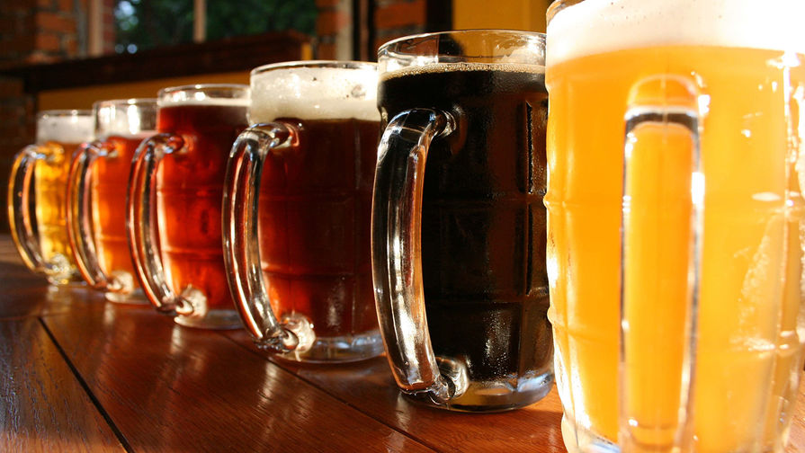

История пива , краткий очерк ...

Пиво является исключительно популярным напитком в большинстве стран мира. Споры о вреде и пользе этого хмельного напитка могут продолжаться бесконечно долго, однако результат споров, каким бы он ни был, не отменит факта огромной популярности пива на всех континентах.
Под пивом в узком смысле следует понимать слабоалкогольный напиток, получаемый спиртовым брожением солодового сусла (часто ячменного) с помощью дрожжей, обычно с добавлением хмеля. Иногда пивом называют и слабоалкогольные напитки из фруктов, ягод и дикорастущих трав, а также сахара или меда. Не оспаривая питательную ценность и вкусовые качества указанных напитков, автор разделяет точку зрения, согласно которой эти напитки логичнее отнести к разновидностям браги. Кроме того, фруктовые напитки готовятся значительно проще солодового пива и для домашних пивоваров-любителей представляют значительно меньший интерес, как теоретический, так и практический.
Впервые напиток из злаков, напоминающий по процессу приготовления современное пиво, получен в глубокой древности. На территории Древней Месопотамии археологом Е. Губером (ФРГ) обнаружены высеченные на камне рецепты шумерского пива. Всего рецептов было не менее 15, они относились к разным сортам пива, а сами таблички с надписями принадлежали храмовому инвентарю. Дошедшая до нас со времен древности шумерская поговорка «Не знать пива – не знать радости» красноречиво свидетельствует о высокой популярности злачного напитка.
Искусство пивоварения из Месопотамии проникло в Древний Египет, где получило не меньшее распространение и дальнейшее развитие. В гробнице царицы Тии найден рельеф, на котором в рисунках подробно представлен процесс изготовления пива. Процесс этот был тесно связан с выпечкой хлеба. Пивовар использовал хлебные формы, которые расставлялись для разогрева вокруг огня. Пока формы разогревались, из ячменя или пшеницы в квашне готовилось по специальному рецепту тесто. Затем его помещали в горячие хлебопекарские формы и запекали, но не до готовности, как хлеб, а до полуготового состояния, когда на поверхности образуется тонкая золотистая корочка, а внутри объем остается непропеченным. Такой «сырой» хлеб затем смешивали с пряностями и заливали финиковым соком. Полученную массу отжимали, со временем жидкость начинала бродить. После завершения брожения напиток разливали по кувшинам и запечатывали для хранения или транспортировки.
Археологические материалы достоверно свидетельствуют о том, что пиво в Египте массово варили уже в 2800 году до нашей эры. Пиво распространилось как в знатном обществе, так и среди простых крестьян и ремесленников.
В начале XX века французскими археологами в Сузах обнаружен свод законов Древнего Вавилона.
Этот памятник юриспруденции был высечен на поверхности двухметровой базальтовой глыбы и стал известен во всем мире как Свод законов Хамурапи (1792–1750 годы до нашей эры). Эта каменная глыба, содержащая первый известный кодекс рабовладельческого права, хранится в настоящее время в Лувре. Законы Хамурапи содержат параграфы, регламентирующие процесс производства и реализации пива.Стоимость пива ограничивалась в пересчете на стоимость зерна. Изготовление некачественного пива или разбавление напитка водой строго преследовалось. За спекуляцию виновника бросали в реку, а за фальсификацию могли или утопить в плохом пиве, или заставить пить его до наступления летального исхода.
По древневавилонской традиции свадебные торжества завершались «пивным месяцем», во время которого жениху разрешалось выпить любое желаемое количество пива за счет тестя.
Из Египта искусство пивоварения проникло в Эфиопию, в Персию и на Кавказ.
В Древнюю Грецию пиво попало после 700 года до нашей эры. Ксенофонт (V век до нашей эры) оставил интересное описание процесса изготовления пива в Древней Армении, где оно называлось «гареджур» (доел, «ячменная вода») (Анабасис, книга 4, глава 5). В Древнем Риме пивоварение не получило распространения, не выдержав конкуренции с виноделием.
В Древнем Китае пиво готовили из проросшего риса и фруктов.
Германия считается европейской родиной пива.
Современное немецкое слово Bier, как и английское beer, вероятно, происходит от латинского birer, что означает «напиток». Еще одно старогерманское название пива Alu или Alo сохранилось в знаменитом английском названии ale (эль). Оно же в современных литовском и латышском языках существует в виде слова alus, эстонском olu, финском о lut и т. д.
Обязательным, по современным понятиям, компонентом пива является хмель, который придает напитку характерный горьковатый привкус. Однако так было не всегда, и в прошлом европейские пивовары использовали самые разнообразные травы для формирования вкуса пива. Применение же хмеля произвело в пивоварении революционный переворот, и это растение стало почти обязательным компонентом любого сорта зернового пива.
В средневековой Европе производство пива концентрировалось в крупных монастырских хозяйствах. Именно монахи усовершенствовали технологию приготовления пива, применив в качестве консерванта и ароматизатора хмель. Впервые об использовании хмеля говорится в монастырских хрониках VIII века. В Германии хмель широко распространился в XII веке, в Нидерландах – в начале XIV, а в Англии – лишь в начале XV века. Некоторые ученые полагают, что начало культивированию хмеля было положено славянскими народами и именно от них хмель попал в Германию и далее на Запад. По другой теории, первыми хмель начали применять в пивоварнях бенедиктинских, францисканских, августинских монастырей в Южной Германии (рис. 0.1).
По данным археологических раскопок в Новгороде, напиток из ячменя был очень популярным уже в IX веке, а изготавливался он практически в каждой семье.
Очередной исторический прорыв в пивоварении связан с открытием Луи Пастером закономерностей дрожжевого брожения, опубликованных им в книге «Очерки о пиве» в 1876 году. Чуть позднее, в 1881 году, датчанин Эмиль Кристиан Хансен впервые получил чистую культуру пивных дрожжей.
Разные страны отличаются собственными любимыми сортами пива и традициями его употребления, которые формировались на протяжении многих столетий.
Страной с наибольшим потреблением пива на душу населения в современном мире является Чехия (148,6 л в 2014 году). Вслед за ней идут Австрия (107 л), Германия (106 л), Эстония (102 л), Польша (98 л), Ирландия (98), Хорватия (85 л), Венесуэла (85 л), Финляндия (84 л), Румыния (83 л), США (77 л), Россия (74 л), Литва (72 л), Великобритания (68 л), Украина (61 л). Но эти показатели усредненные – в действительности нужно учитывать региональные отличия. Например, очевидно, что жители Баварии опережают чехов, а жители севера страны значительно от них отстают.
В баварском городе Вайхенштефан расположен древнейший в мире пивоваренный завод, основанный в еще 1040 году.
Этот завод является одним из наиболее популярных туристических объектов.
В ФРГ производится свыше 5000 различных сортов пива, в том числе самое крепкое в мире кульмбахское пиво с содержанием алкоголя 10,92 %. Самое большое количество пива в год производится в городе Дортмунде, а самый большой пивоваренный завод – в Мюнхене. В этом же городе ежегодно проходит зрелищный 16-дневный пивной фестиваль «Октоберфест», на который приезжают несколько миллионов любителей пива со всего мира. Интересно также, что, несмотря на наличие крупных предприятий, в стране процветают многочисленные мелкие частные пивоварни, столетиями сохраняющие уникальные рецепты пива. Несмотря на сравнительно высокие цены, эти маленькие частные пивоварни в различных областях страны недостатка в потребителях своей продукции вовсе не испытывают. Баварцы называют пиво своим основным продуктом питания и предпочитают напиток местного производства.
В Германии пить пиво из бутылки считается крайне неприличным. Немцы любят посидеть в пивных под открытым небом, обычно оборудованных в виде небольшого сада с прудом и зарослями хмеля, а домой бюргеры покупают пиво ящиками.
В Австрии на одного жителя приходится в год 31л сока, 70 л прохладительных напитков и 107 л пива. А в Голландии почтовый ящик часто устраивается в виде пивной бочки, особенно в сельской местности.
В Чехии, так же как и в Баварии, пиво пьют везде и всегда. Бочку бесплатного пива можно увидеть даже на территории заводов и фабрик. В маленьких пивных, которых обычно несколько на каждой городской улице, к пиву подают специальный сыр, орешки и жареные сосиски. Самая известная закуска – свиная рулька, запеченная в пиве, с гарниром из квашеной капусты. Посуда для употребления пива – только стеклянная.
Пивной столицей Чехии является город Пльзень. В этом городе производят известное пиво «Пльзеньский Праздрой», получившее Золотую медаль на Международной выставке кулинарного искусства в Вене в 1884 году. С тех пор этот сорт считается одним из лучших в мире. В Пльзене можно также найти самую маломощную действующую пивоварню, производящую в сутки около 30 л пива.
Второй знаменитый сорт чешского пива, «Будвайзер Будвар», известен своим наиболее высоким содержанием спирта среди чешских сортов и специфическим сладковатым ароматом. Этот сорт получил всеобщее признание еще во времена императора Фердинанда I, и благодаря большому количеству завоеванных призов и титулов название этого пива занесено в Книгу рекордов Гиннесса. Пиво в Чехии продается повсеместно, как в ресторанах, так и в уличных закусочных. Разброс цен на один и тот же сорт может составлять от 60 до 15 крон за бокал.
В Чехии пиво не только пьют, но и варят из него супы, соусы, замешивают на пиве тесто.
В Англии пиво пьют в больших компаниях в специальных пивных барах, называемых пабами. Чаще всего это мероприятие превращается в шумное застолье, в процессе которого выпивается много пива крепких сортов. С этой страной связано много интересных пивных историй. Например, студент Оксфордского университета Том Боудер в процессе экзамена сообщил преподавателю о своем праве на кружку пива, которое закреплено в старинном английском законе. Пиво студенту принесли, но одновременно выписали штраф за нарушение другого закона, в соответствии с которым студенты обязаны приходить на экзамен при шпаге.
В английском городе Брайтоне в ночных ресторанах посетителям показывали в качестве шоу улитку, которая при длине 30 см весила 0,5 кг. Большой размер и вес улитки хозяева объясняли тем, что она любит пить пиво.
Традиционно английское пиво (эль) принято выдерживать в касках – алюминиевых бочках, напоминающих по форме обычные деревянные. На заводах пиво наливают в них нефильтрованным и непастеризованным. Вторичное брожение, завершающий этап производства, происходит уже в процессе хранения касок в подвалах паба. Бармены могут самостоятельно менять условия дображивания, влияя таким образом на вкус и крепость пива. Открытая каска должна быть выпита в течение 2–3 дней, иначе пиво испортится.
Долгое время Лондон считался центром мирового пивоварения. В XIX веке производимый здесь портер экспортировался по всему миру. Еще в начале прошлого века в городе имелось несколько десятков крупных пивоварен. Однако процессы экономической глобализации вытесняют традиционные способы производства. В 2006 году была закрыта одна из самых известных старых пивоварен Young's (ее перенесли в Бедфорд и объединили с Wells). Сейчас в Лондоне только одна крупная старая пивоварня – Fuller's, но в последние годы открывается все больше маленьких пивоварен, оснащенных современным оборудованием для варки эля.
В Швеции употребляют простое дешевое пиво. За столом не принято произносить тосты – здесь поются веселые и громкие песни. Чем моложе компания, тем, как правило, песни звучат громче.
В Дании употребление пива традиционно совмещается с игрой в бильярд. У датчан не принято чокаться, но произносится тост «За здоровье».
В странах Балтии (Литва, Латвия, Эстония) традиция малого пивоварения полностью не прерывалась даже в советский период. Здесь также ценят пиво, и здесь, как и в Германии, важно, чтобы продукт был совершенно натуральный. Пиво принято пить в небольших компаниях вечером или в выходные, проводя время за обсуждением новостей.
Итальянские любители пива возвели в городе Падуя копию собора Святого Антония. Постройка оказалась лишь в четыре раза меньше оригинала. Чтобы построить здание, понадобилось 3 млн 45 тысяч пустых банок из-под пива.
В 1950-1960-х годах во всем Китае насчитывалось лишь восемь пивзаводов. Но в 1995 году их уже было почти 800. Ежегодно пивоваренная отрасль КНР производит 120 млн гкл пива. Трудно делать замечания о качестве самого напитка, но из официальной статистики известно также, что в 1998 году около 500 граждан страны пострадали от самопроизвольных взрывов бутылок с пивом. Поэтому к экспорту китайского пива следует относиться осторожно.
В Китае сложился собственный пивной этикет, отличный от европейского. Младший по возрасту в компании обязательно должен краем кружки прикоснуться к кружке (или бокалу) старшего по возрасту или положению товарища. Бокалы наливаются до краев, перед началом пития произносят тост.
А вот в США пивные традиции не сложились. Американцы могут употреблять пива много, но обычно это баночное пиво низкого качества, содержащее консерванты и ароматизаторы. Впервые баночное пиво было произведено в 1935 году, его выпустила в Вирджинии и Нью-Джерси компания «Крюгер Вир Ньюарк». Впоследствии баночное пиво распространилось по всему миру с большой скоростью. А в тех же США из 11 тысяч пустых пивных банок был построен самолет, который может летать. Самолет весит 210 кг, а его грузоподъемность – 240 кг.
В США поставлен рекорд по скорости употребления пива – в 1977 году некто Стивен Петросино выпил 1 л пива за 1,3 секунды. Дело было в Карлисле (штат Пенсильвания). Но в этой же стране есть дискриминационные законы, связанные с употреблением пива. Например, в Эймсе (штат Айова) действует закон, в соответствии с которым мужчине нельзя ложиться в постель с женщиной, если он сделал более трех глотков пива.
Самая крупная в мире компания по производству пива – «Анхейзер Буш Инкорпорейтед» (АБИ) – находится в США (Сент-Луис, штат Миссури). В состав компании входит 12 пивоваренных заводов. Ежегодно компания производит около 11 млрд л пива, это наибольший годовой объем, выпускаемый одной компанией.
В Европе больше всего пива выпускает голландская корпорация Heineken. Компания владеет собственным телеканалом.